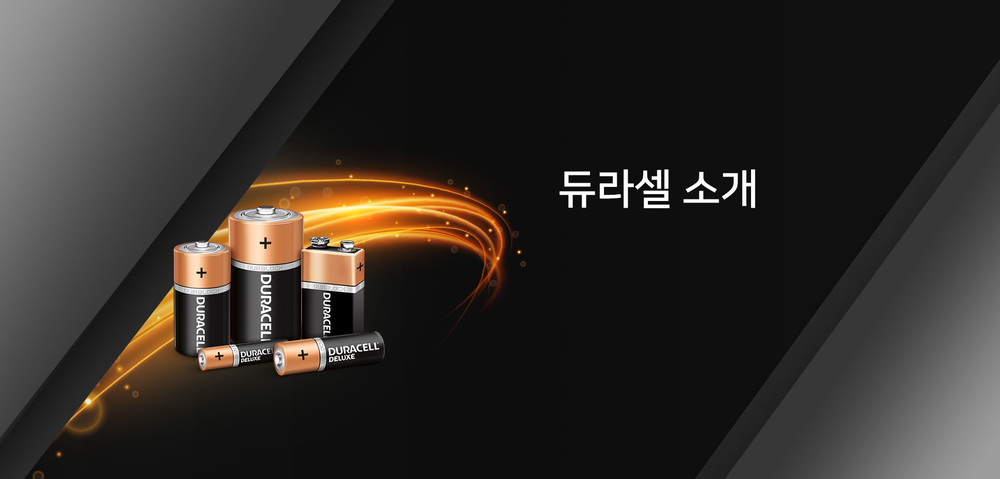
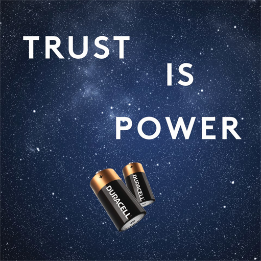
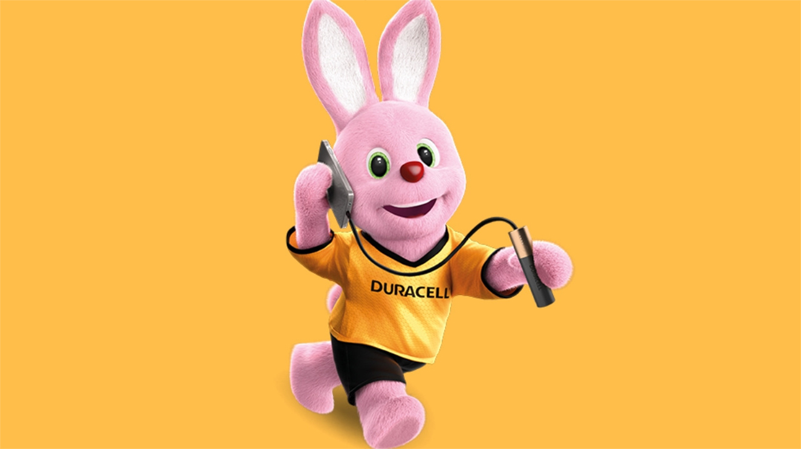
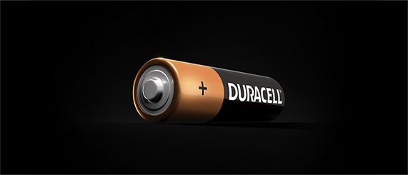
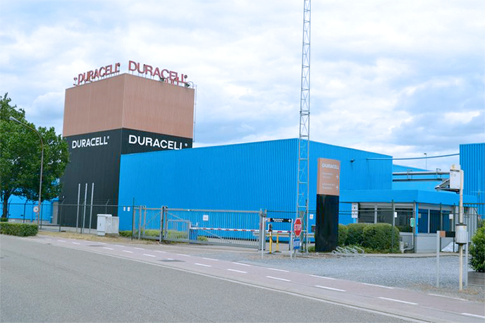
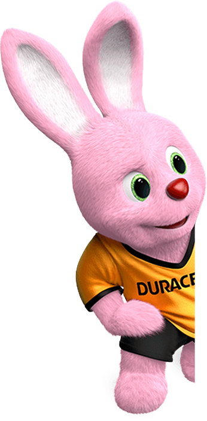

세계 판매 1위 건전지 회사, 1965년 브랜드 출시 이래
글로벌 소비자 아이콘으로 성장한 듀라셀을 소개합니다
- 1920년대
-
- 듀라셀의 시작
- 듀라셀은 1920년대 초에 발명가 사뮤엘 루벤과 텅스텐 필라멘트 제조업자 필립 로저 말로리의 만남에서 시작되었습니다. 루벤은 실험에 필요한 장비를 구하는 과정에서 P.R. 말로리 컴퍼니(Mallory Company)를 방문하게 됩니다. 루벤과 말로리는 루벤의 발명가로서의 천재성과 말로리의 제조 기술을 합치는 것이 좋다고 판단하였습니다. 이후 두 사람의 동업 관계는 말로리가 사망하는 1975년까지 지속되었고, 이는 듀라셀 인터네셔널(Duracell International)의 기반을 형성했습니다.
- 1960년대
-
- 최초로 달에 간 건전지, 듀라셀
- 듀라셀의 첫 알카라인 건전지는 말로리 브랜드로 출시되었습니다. 건전지의 초기 모델인 이 제품은 에너지 소모가 많고 플래시가 내장된 Kodak의 인스터매틱(Instamatic) 카메라를 위해 특별히 설계 됐습니다. 1965년에 듀라셀 브랜드가 소개되었고, 소비자 지향적 프로그램과 제품에 초점을 맞추었습니다. 테이프와 녹음기, 워키토키와 같은 휴대용 기기 제조사인 Afga, Kodak, Polaroid에 직접적인 건전지를 공급하기도 했습니다. 그리고 1969년, 듀라셀은 아폴로 11호 계획에 참여하여 달에 간 첫 번째 건전지가 되었습니다.
- 
- 1970년대
- 
- 
-
- 아이콘의 탄생
- 듀라셀의 첫 알카라인 건전지는 말로리 브랜드로 출시되었습니다. 건전지의 초기 모델인 이 제품은 에너지 소모가 많고 플래시가 내장된 Kodak의 인스터매틱(Instamatic) 카메라를 위해 특별히 설계 됐습니다. 1965년에 듀라셀 브랜드가 소개되었고, 소비자 지향적 프로그램과 제품에 초점을 맞추었습니다. 테이프와 녹음기, 워키토키와 같은 휴대용 기기 제조사인 Afga, Kodak, Polaroid에 직접적인 건전지를 공급하기도 했습니다. 그리고 1969년, 듀라셀은 아폴로 11호 계획에 참여하여 달에 간 첫 번째 건전지가 되었습니다.
- 2016년
-
- 버크셔 헤서웨이와 합병
- 2016년, 버크셔 해서웨이 (Berkshire Hathaway)는 듀라셀을 인수했습니다. 듀라셀은 앞으로도 명실상부한 전 세계 1위 건전지 회사 자리를 지키기 위해 지속 가능한 성장, 업계를 리드하는 혁신, 고객을 위한 장기적 가치 창출에 주력할 것 입니다.
- 
듀라셀 버니 소개
1973년 이후 듀라셀 버니는 시대 흐름에 맞춰 진화해 왔습니다.
이러한 듀라셀 버니의 진화는 듀라셀 건전지 및 제품의 품질 개선과 함께 진행되었습니다.

- 1초당 평균 63개 판매
- 소비자는 듀라셀 버니와 '카퍼탑 (Copper Top)' 브랜드를 건전지의 대명사로 여기고 있으며, 듀라셀은 이러한 강점을 살려 소비자 니즈의 충족을 목표로 하고 있습니다. 듀라셀의 궁극적인 목표는 소비자에게 첫 번째로 선택 받는 제품이 되는 것과, 듀라셀의 파트너들에게 장기적인 가치와 성공을 창출하는 것입니다.
- 혁신을 통한 성공
- 듀라셀은 경쟁사 제품보다 콤팩트하고, 강력하며, 효율적이고, 오래가는 건전지의 개발을 통해 혁신을 일궈낸 역사를 가지고 있습니다. 전신이 된 회사를 창업한 1940년대 이래 듀라셀은 최초의 알카라인 AA 및 AAA 건전지, 최초의 보청기 버튼전지 등 업계 최초 제품을 다수 출시했습니다. 듀라셀은 과감한 R&D 투자를 통해 가장 신뢰받는 제품의 위상을 유지하고 있습니다.
- 품질 보증 및
환경에 미치는 영향 최소화 - 듀라셀의 알카라인 건전지는 수십 년간 중금속을 일체 사용하지 않고 있습니다. 또한 듀라셀의 품질 보증은 ISO 9000 표준에서 규정하는 요건을 능가하며 품질 검사를 통해 최고의 성능을 보장합니다.